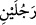
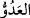

15. Mûsâ, ahâlîsinin habersiz olduğu bir sırada şehre girdi. Orada, biri kendi
tarafından, diğeri düşman tarafından olan iki adamı birbiriyle döğüşür buldu. Kendi
tarafından olanı, düşmana karşı ondan yardım diledi. Mûsâ da ötekine bir yumruk
vurup ölümüne sebep oldu. (Bunun üzerine:) Bu şeytan işidir. O, gerçekten
saptırıcı, apaçık bir düşman, dedi.
“Mûsâ, ahâlîsinin habersiz olduğu bir sırada şehre girdi.”
Mûsâ (a.s.), Firavun’un sarayından çıktı ve şehre gitti. Çünkü onun sarayı, “Şehrin
öbür ucundan bir adam koşarak geldi.” (el-Kasas, 28/20) âyetinde de beyan
olunacağı gibi Mısır’ın kenar mahallinde idi. Denilmiştir ki; burada kasdedilen Mısır
diyarındaki Menaf (Münif) şehridir; burası Mûsâ’nın Firavunu’nun ikamet ettiği
şehirdir. Orada tahtının altından akan ırmaklar vardı. Nil’in batı yakasında Mısır’ın
Fustat şehrine oniki mil mesafede idi. Bugün burası Mısır-ı kadîme (Eski Mısır) olarak
bilinir.
Bu şehir Mısır diyarında Tûfan’dan sonra imar edilen ilk şehirdir. Mısır’daki
hükümdarlık, eski tarihlere kadar uzanır.
Mûsâ (a.s.), halkının habersiz olduğu bir anda; yâni onların âdeten şehre giriş
vakitlerinin dışındaki bir zamanda şehre girdi. İbn Abbas (r.a.), der ki: O, öğle
vaktinde, halkının kaylûle istirahatında olduğu bir anda şehre girmişti ve yollar boştu.
“Orada, biri kendi tarafından, diğeri düşman tarafından olan iki adamı birbiriyle
döğüşür buldu.”
Orada biri kendi taraftarlarından, öbürü düşmanlarından olup dövüşen iki adam
gördü. “__WORD__ (dövüşüyorlar)” cümlesi, “__WORD__ (iki adam)” kelimesinin sıfat cümlesidir.
“__WORD__ (vuruşmak)”, birbirini öldürmek, dövüşmek ya da kavga etmek mânâlarına gelir.
“__WORD__ kendi ırkından ve dîninden demektir. Bunlar İsrâiloğulları’dır. Zikredilen bu
kimsenin Sâmîrî olduğu da rivâyet edilmiştir. Nitekim Fethu’r-Rahmân’da bu şekilde
kaydedilmiştir. “__WORD__ (bu)” işâret zamiri, burada hikâye üslûbu ile zikredilmiştir. Yoksa
bu adam ile Mûsâ’nın düşmanından olan kimse, hâdise Rasûlullah (s.a.)’e anlatılırken
hâzır değil idiler. Ancak bu iki kimse, Mûsâ’nın onlarla karşılaştığı zamana işâretle
hâzır olduğundan Allah Teâlâ onların o zamanki hallerini hikâye etmiştir. “__WORD__ (düşman)” kelimesi müfred ve cemi olarak kullanılır; “din yönünden muhâlif ve
düşman” mânâsına gelir. Bunlar Kıptîler’dir. Adamın isminin “Kaytun” olduğu söylenir.
Nitekim Keşfü’l-esrâr’da bu şekilde kaydedilmiştir.
Bu kimse, Firavun’un ekmekçisi idi. Yukarıdaki İsrâilliyi, Firavun’un mutfağına odun
taşıtmak için kullanmak istiyordu.
“Kendi tarafından olanı, düşmana karşı ondan” yâni Mûsâ’dan “yardım diledi.”